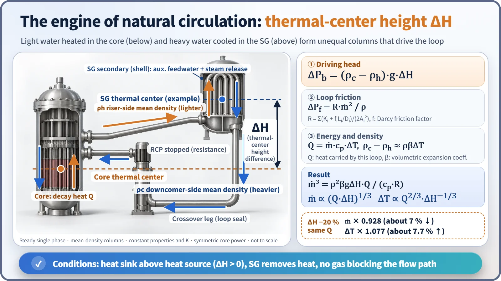
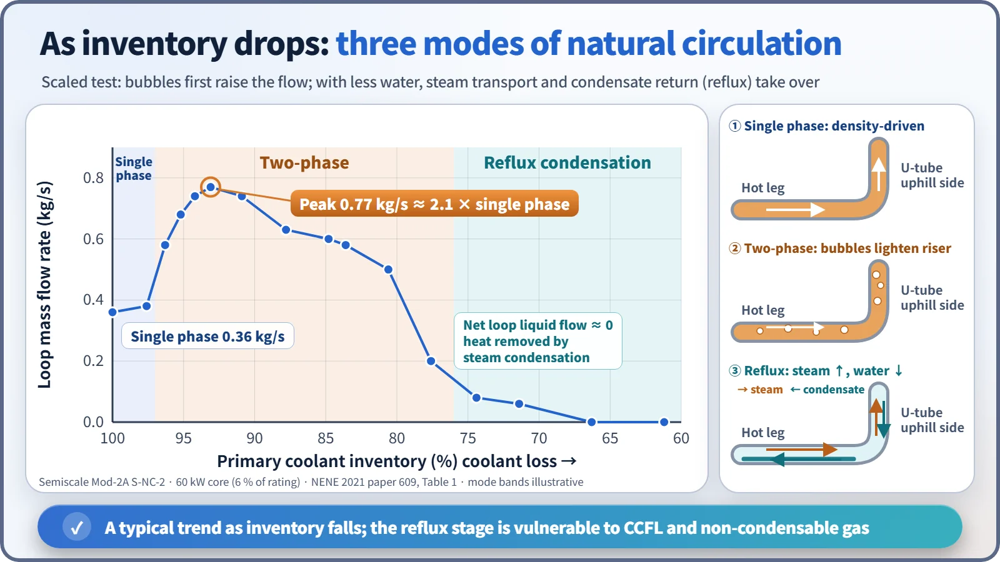
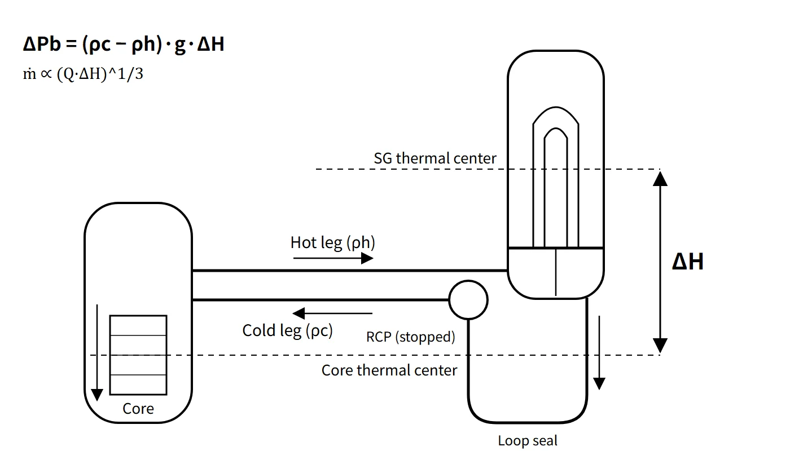

Thermal Hydraulics & Thermodynamics · C-TH-003
Natural Circulation — How a Thermal-Center Height Difference Replaces the Pump
Buoyancy between a low heat source and a high heat sink keeps decay heat moving when the reactor coolant pumps stop.
Natural circulation is flow around a loop driven, without any pump, by buoyancy: the density difference between coolant heated at the heat source (the core) and coolant cooled at the heat sink (the steam generator) acting in the gravity field. It is sustained only when the thermal center of the heat sink lies above the thermal center of the heat source.
In a PWR it is the basic means of carrying decay heat to the steam generators (SGs) whenever the reactor coolant pumps (RCPs) are stopped: loss of offsite power, station blackout (SBO) and post-accident cooling.
Principle and mechanism
Driving head and thermal centers
Integrating the hydrostatic pressure once around the loop gives the buoyancy driving pressure ΔPb = −g∮ρ dz. If the riser side (core outlet to SG inlet) and the downcomer side (SG outlet to downcomer) are each reduced to a column of effective mean density, this becomes:
- ΔPb = (ρc − ρh) · g · ΔH
- ρc: effective mean density on the downcomer (cold) side; ρh: effective mean density on the riser (hot) side
- ΔH: elevation difference between the SG thermal center and the core thermal center
The thermal center is not the geometric center of a component but the equivalent height at which heat is effectively added or removed, defined as the heat-weighted mean elevation ztc = ∫z dQ / ∫dQ. For a symmetric cosine axial power shape, the core thermal center is at the mid-height of the effective core. The SG thermal center lies within the U-tube bundle above the tubesheet, shifted toward the region that removes the most heat, and it moves with operating conditions. A driving force exists only if the heat sink is higher than the heat source (ΔH > 0), which is why a PWR places the vessel nozzles above the top of the core and the SG tubesheet above the nozzles.

Flow rate versus height difference
At steady state the driving head equals the loop friction. Assume steady single-phase flow with constant properties and loss coefficients.
- Friction: ΔPf = R · ṁ²/ρ, with R = Σ(Ki + fi·Li/Di)/(2Ai²) (f is the Darcy friction factor)
- Energy: Q = ṁ · cp · ΔT (Q is the heat carried by this loop)
- Density difference: ρc − ρh ≈ ρβΔT (β is the volumetric expansion coefficient)
Solving the three together gives ṁ³ = ρ²βgΔH·Q / (cp·R), so:
- ṁ ∝ (Q·ΔH)1/3 and ΔT ∝ Q2/3 · ΔH−1/3
- If friction is proportional to the flow rate (laminar flow), the exponent becomes 1/2. Plant loops are usually turbulent, so 1/3 is the default; the assumption should always be stated.
Worked example: shorter thermal-center distance. If ΔH falls by 20 % with Q and R unchanged:
- ΔT'/ΔT = 0.8−1/3 = 1.077 → temperature difference rises by about 7.7 %
- ṁ'/ṁ = 0.81/3 = 0.928 → flow falls by about 7.2 %
- Check: 0.928 × 1.077 = 1.000 (same heat removed)
- With the laminar assumption: 0.8−1/2 = 1.118 (about 11.8 % higher)
An example for a sense of scale: assume ΔH 10 m, a loop pressure loss of 0.7 MPa at rated flow, a rated core ΔT of 33 °C, ρβ ≈ 2.4 kg/m³K and decay heat of 2 % (assumed values, not design data). The flow ratio is then f³ = ρβgΔH·q·ΔT₀/ΔP₀ ≈ 2.2×10⁻⁴, giving a flow of about 6 % of rated and a core ΔT of about 11 °C. The actual flow may be lower because of the resistance of the stopped RCP impellers and the higher friction at low Reynolds number.
Three modes as inventory falls
As the coolant inventory decreases, natural circulation changes character.
- Single-phase natural circulation: circulation driven by liquid density differences alone.
- Two-phase natural circulation: bubbles in the riser make it lighter, so the driving head and the flow actually increase and pass through a peak.
- Reflux condensation: with still less inventory, continuous liquid circulation weakens. Steam from the core rises through the hot leg into the U-tubes and condenses; the condensate returns to the core along the hot leg in the opposite direction to the steam (counter-current flow). In B&W plants this is called the boiler-condenser mode. The net loop circulation is nearly zero, but heat is still removed by condensation. The limits are counter-current flow limitation (CCFL) in the hot leg and SG inlet, and accumulation of non-condensable gas in the U-tubes.
In the Semiscale Mod-2A test S-NC-2 (core power 60 kW = 6 % of the facility rating), the loop flow was 0.36 kg/s at 100 % inventory. It peaked at 0.77 kg/s at 93.1 % (about 2.1 times the single-phase value), fell to 0.08 kg/s at 74.4 %, and was zero at 66.3 % and below.

What it means in a plant
Conditions for establishing and maintaining it, and what defeats it
| Condition to establish and maintain | What breaks it (impeding factors) |
|---|---|
| Heat-sink thermal center above heat-source thermal center | Layout problem (insufficient ΔH) |
| SG heat sink: secondary-side level (auxiliary feedwater) + steam release (ADV) | SG dryout, loss of feedwater, stagnation in an isolated SG loop |
| Continuous flow path: no voids in the hot legs or at the top of the U-tubes | Steam voids, accumulation of non-condensable gas |
| Primary subcooling maintained (pressurizer pressure and level) | Saturation from excessive depressurization, loss of coolant |
| Even cooling among loops | Loop stagnation or partial U-tube reverse flow from asymmetric cooling |
| Boron and temperature mixing | Stratification, stagnant hot water in the upper head |
Sources of non-condensable gas include dissolved hydrogen in the coolant, nitrogen from the safety injection tanks (SITs, entering after the tanks empty), hydrogen from the zirconium–water reaction, radiolysis, helium from B-10(n,α), hydrazine decomposition (N₂, NH₃), dissolved air in injected water, fission gas and helium from failed fuel, and air left after maintenance.
Confirming indications and operator actions
Natural circulation is judged established from the following indications (a concept shared by the natural-circulation verification attachment common to Westinghouse ERG procedures such as ES-0.1, ES-0.2 and ES-1.2; numbers are plant-specific):
- RCS subcooling margin at or above the procedural criterion
- SG pressure stable or decreasing
- Hot-leg temperature (Th) and core exit temperature (CET) stable or decreasing
- Cold-leg temperature (Tc) near the saturation temperature for SG pressure (primary–secondary coupling)
- Core ΔT smaller than the full-power ΔT and stable. If ΔT keeps rising, check auxiliary feedwater and steam release first.
Operator actions: maintain SG narrow-range level with auxiliary feedwater and control the cooldown rate with the ADVs; maintain subcooling with pressurizer pressure and level; run the CRDM cooling fans and limit the cooldown and depressurization rates to prevent an upper-head bubble; before cooldown, raise boron to the cold-shutdown concentration, allowing for the slow mixing time under natural circulation.
Upper-head bubbles and how to detect them
In 1980, at St. Lucie Unit 1, depressurization during natural-circulation cooling flashed stagnant hot water in the upper head, and the pressurizer level rose abnormally fast. The event led to NRC GL 81-21. Means of detecting a bubble:
- Reactor vessel level monitoring system (RVLMS; in CE-type plants, heated-junction thermocouples, HJTC, part of the ICCMS)
- A rapid pressurizer level rise during depressurization that charging flow cannot explain
- Comparison of CET and upper-head temperatures with the saturation temperature at RCS pressure
- A mismatch in the charging–letdown balance
LOCA, SBO and natural circulation
- LBLOCA: the RCS depressurizes quickly to containment pressure, and the core is cooled by ECCS injection and steam venting through the break. The SG secondary side is actually hotter and cannot act as a heat sink.
- SBLOCA: RCS pressure stays near SG secondary pressure for a long time, so the SGs are the main heat sink. Decay heat is removed in the sequence single-phase → two-phase → reflux, so natural circulation is decisive.
- Saturated coolant with an upper-head bubble: the upper head is outside the main circulation path, so natural circulation is still possible. If the bubble spreads into the hot legs and U-tubes, however, the plant moves into reflux and pressure control becomes difficult, so subcooling must be restored.
- SBO: in a typical PWR, the turbine-driven auxiliary feedwater pump supplies water from a feedwater storage tank to the SGs, and steam is released through the main steam atmospheric dump valves (MSADVs).
Passive design examples
AP1000 uses primary-side natural circulation through the PRHR heat exchanger in the IRWST. Secondary-side passive systems, such as the PRHRS of the SMART integral reactor design, use SG secondary-side natural circulation to reject heat to condensation tanks. NuScale relies on natural circulation for normal operation itself.
Regulatory and design criteria
For example, in the United States the following criteria apply:
| Basis | Key point |
|---|---|
| 10 CFR 50 App. A, GDC 34 | Requirements for the residual heat removal system |
| SRP 5.4.7, BTP 5-4 (formerly RSB 5-1) | Cold shutdown using only safety-grade systems; for a PWR, boron mixing and cooldown under natural circulation are tested or compared with tests of a similar design |
| RG 1.68 App. A (A-4.t) | Low-power natural-circulation test (heat removal, boron mixing, cooldown, depressurization) or comparison with prototype-plant hydraulic data |
| NUREG-0737 I.G.1 | Post-TMI: natural-circulation training during low-power testing |
| NRC GL 81-21 (1981) | Evaluation of natural-circulation cooldown procedures and training; demonstration of cooldown without vessel voiding |
| APR1400 DCD 14.2.12.4.22 | Natural-circulation test (responding to RG 1.68) |
A first-of-a-kind (FOAK) plant performs the natural-circulation test; follow-on units may substitute earlier test results plus a comparison of RCS hydraulic loss coefficients. The framework of GL 81-21 and BTP 5-4 remains unchanged; in advanced reactors, passive natural-circulation systems (such as PRHR and PRHRS) have in addition become design requirements.
Easily confused pairs
| Single-phase natural circulation | Two-phase natural circulation | Reflux condensation | Forced circulation | |
|---|---|---|---|---|
| Driver | Liquid density difference | Density difference enlarged by bubbles | Steam rising, condensate falling | RCP head |
| Loop flow | A few % of rated | Larger than single phase (peak) | Net circulation ≈ 0 | 100 % |
| Typical situation | LOOP or SBO, normal inventory | Early SBLOCA | SBLOCA with reduced inventory | Normal operation |
| Weak point | Voids, non-condensable gas | Further inventory loss | CCFL, non-condensable gas | Loss of power |
Key points at a glance
- Definition: buoyancy-driven circulation, without pumps, produced by the source–sink density difference and gravity.
- Driving head: ΔPb = (ρc − ρh)·g·ΔH, with ΔH = SG thermal center − core thermal center > 0.
- Thermal center: heat-weighted mean elevation z = ∫z dQ / ∫dQ.
- Flow relation: ṁ³ = ρ²βgΔH·Q/(cp·R) → ṁ ∝ (QΔH)1/3, ΔT ∝ Q2/3·ΔH−1/3 (turbulent friction; the exponent becomes 1/2 for laminar friction).
- ΔH reduced by 20 %: ΔT up about 7.7 % (not 20 %), flow down about 7 %.
- Modes: single phase → two phase (flow peak) → reflux condensation (limited by CCFL).
- Conditions: ΔH > 0, SG heat sink (auxiliary feedwater, ADV), no voids or non-condensable gas, subcooling maintained.
- Confirmation: subcooling margin; SG pressure, Th and CET stable or decreasing; Tc ≈ SG saturation temperature.
- Basis: GDC 34, BTP 5-4, RG 1.68 natural-circulation test, GL 81-21.
